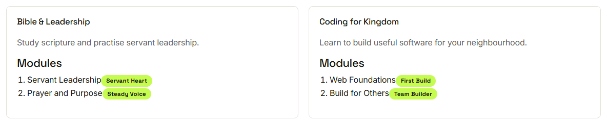
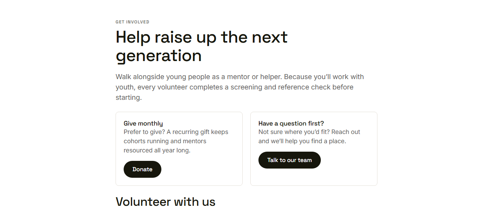
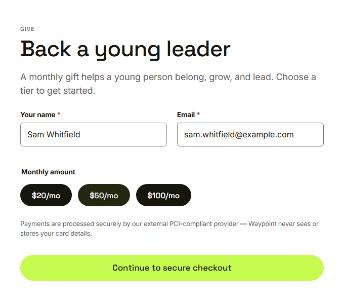

Waypoint · Journey 28
Explore the public site
Open to everyone, no account needed
Straight to the home page
 No sign in in the way
No sign in in the way
Tracks, modules and badges

Only published content appears
Current cohorts
 No young person's details
No young person's details
Get involved

Volunteers complete a screening check
Donate without card details

Payment is finished with an external provider
Things to remember
- Open to everyone, no sign in
- Tracks, cohorts and impact, never youth details
- Volunteers acknowledge the screening check
- Donations finish with an external provider